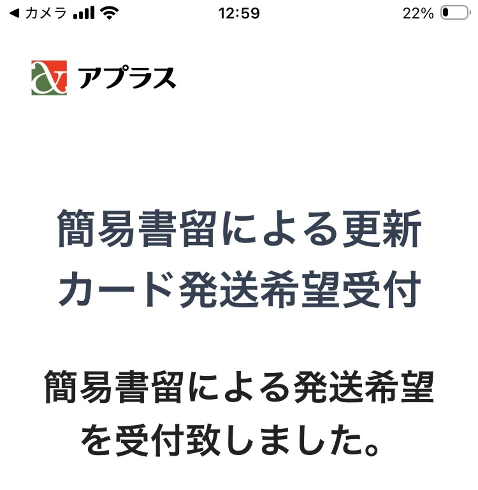
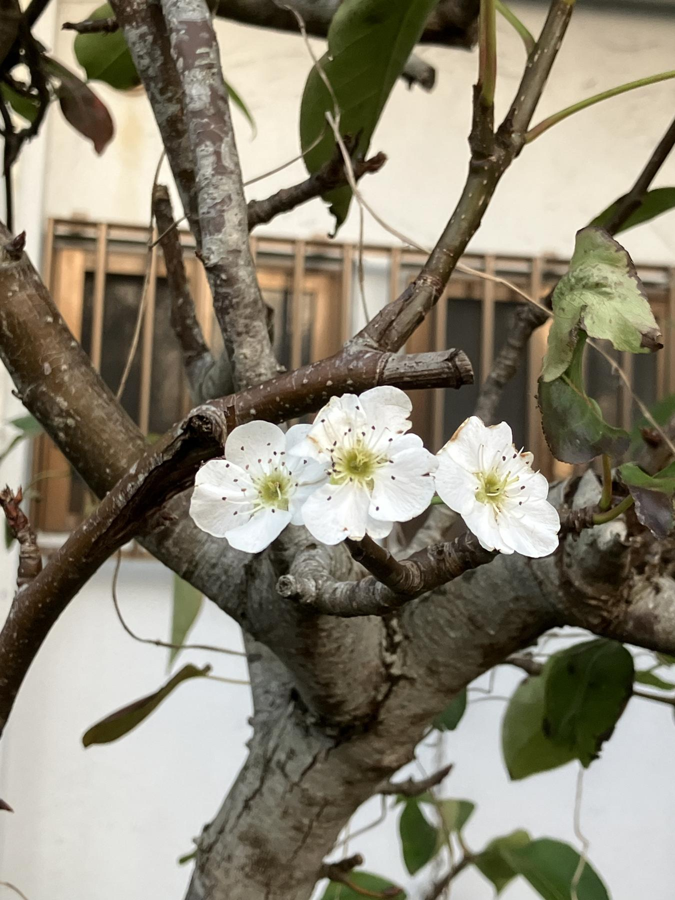

うるがいの話 ある日
最新: 更新カード郵送方法【うるがいの話 ある日】とは 一日だけのプログです
『うるがいの話』の最新一日だけのプログで、通信料が少なく経済的だ。カニの画像をクリックすると全ての日付が載る『うるがいの話』サイトを表示します
|
|
【うるがいの話】 うるがい(ｳﾙｶﾞｲ urugai)とは、『もずくがに』の名前でとても大きくなります。 |
|---|---|
|
|
【カミマヤーの話】 猫のことを方言でマヤーといいます。カミマヤー（kamimayaa）とは、神の猫のことです。 |
|
【たながぁの音楽】 たながぁ（ﾀﾅｶﾞｰ tanagaa）とは手長えびのことで、何種類かあり大きいのは車 エビぐらいになります。 |

|
【ぶながぁの話】 ぶながぁ(ﾌﾞﾅｶﾞｰ bunagaa)とは、赤い髪の毛、赤い身体、そして身長は１ｍ２０ｃｍ ぐらい、川の蟹を食べているの目撃された。場所は沖縄県国頭郡大宜味村のと ある村僕の隣近所に住んでいる爺さんから、聞いた話です。 |
|
|
【ギーマの話】 ギーマ(giima)とは、山原の里山に咲くスズランに似た、 花を付けます。実は食べられます、 気が付くと口の周りが紫になっています。 |
2026年03月08日 (日）更新カード郵送方法
15:02
新しい有効期限のカード（更新カード）に関する大切なお知らせ
のハガキが、届いた。ん！、よく見ると「簡易書留」の手続きを
しなければ、「普通郵便」になりますよという内容だった。変更
するには、ハガキのＱＲコードから変更サイトにアクセスして変
更する。パソコンでやりたかったが、方法が見つからなかった。

今までは、「簡易書留」だったような気がするが、なんでだろう
とカードのサイトを見る。
このたび、お客さまからの「不在が多くカードが受け取れない」
といったお声を受けて、更新カードの郵送方法を「簡易書留」か
ら「普通郵便」へ変更させていただくこととなりました。
フムフム、なるほど。そういえば、ＡＭＥＸカードが普通郵便で
届いたので、ヨメが更新カードって「簡易書留」じゃないの？と
言っていた。で、調べると前から「普通郵便」らしい。記憶にな
いが、そのあたりのユーチューブ動画があり、なぜそうなのかを
説明したあり、さらに送られた封筒に「簡易書留」にするのなら
電話してと説明があった。え！、と自分の封筒にあった紙をみた
書いてあった。オオである。
